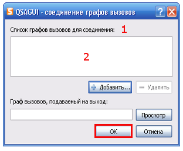

Содержание
Что такое QSAGUI?
Начало
Создание графа вызовов
Соединение графов вызовов
Очистка графа вызовов
Обновление графа вызовов
Получение списков файлов/функций
Показать граф вызовов
Настройки
|
Соединение графов вызовов
Используйте "Граф вызовов" -> "Соединить..." или кнопку "Соединить"на панели инструментов или сочетание клавиш "Ctrl+L".

1. Добавьте графы вызовов для редактирования в список, используйте кнопки "Добавить..." и "Удалить" для управления элементами.
2. Выберите полное имя общего графа вызовов.
Нажмите кнопку "OK", чтобы получить общий граф вызовов.
|